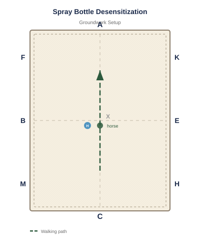

Equipment: Spray bottle with water, Halter and leadrope
Arena Diagram

Step-by-Step Instructions
Many horses fear spray bottles (fly spray, wound spray). This exercise makes spray bottles a non-event.
Start by letting the horse see the spray bottle. Spray the air away from the horse so it hears the sound.
Gradually spray closer to the horse. If it stands still, praise and retreat.
Progress to spraying the horse's chest (a less sensitive area) from close range.
Work along the neck, shoulders, back, and eventually the legs.
The goal: the horse stands calmly for full-body spray application.
Common Mistakes to Avoid
Spraying the horse in the face or ears (save those for last, if ever).
Spraying from directly behind where the horse can't see you.
Moving too quickly through the stages when the horse is clearly worried.
Spraying continuously instead of spray-pause-reward-spray.
Variations & Progressions
Practice with different spray bottles (different sounds and spray patterns).
Have someone else spray while you hold the horse for a two-person scenario.
Use the spray bottle routine as a daily grooming exercise to maintain desensitization.
Tip: Make fly spray application a positive experience every time, not a wrestling match. A few minutes of patient training saves years of spray-bottle battles.